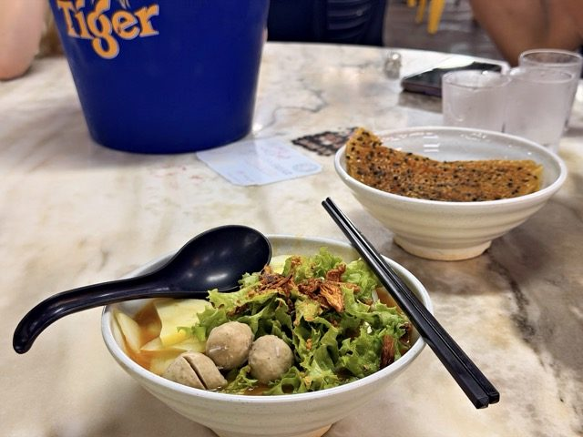

Field guide

Field note · Tanjung Tokong · 20 Jul 2026
Jawa Mee at 33 Best Food Hub
Thick sweet-savoury tomato gravy, prawn fritters, and a Hungarian vadas echo — Monday evening Jawa Mee near the Airbnb.
The closest hawker centre to our Airbnb is 33 Best Food Hub, and I can see myself trying 33 dishes there, easy. But for this Monday evening, 20 July, I’m going with a bowl of Jawa Mee. With the colourful dish in front of me, I’m checking in with my AI research assistant, C-Mee-PO, for insights.
C-Mee-PO briefs the bowl
C-Mee-PO: That’s a rich soup right there, Balazs.
Jawa Mee (or Mee Jawa) is a classic Penang hawker noodle dish with Peranakan (Nyonya) influences. Despite the name suggesting a link to Java (Indonesia), it doesn’t actually originate there — it’s a localized Malaysian creation shaped by Chinese, Malay, and Peranakan flavours.
What it is
Yellow egg noodles (sometimes mixed with rice vermicelli) in a thick, sweet-savoury tomato-based gravy. The broth gets its body and sweetness from ingredients like sweet potatoes, tomato paste or purée, and often shrimp or pork stock, with a mild tang and subtle spiciness. Hearty, yet considered a relatively light meal — popular for breakfast, lunch, or tea time.
Typical toppings & garnishes
- Boiled or hard-boiled eggs
- Boiled potatoes (sliced or chunks)
- Bean sprouts
- Slices of beancurd (taukua / fried tofu)
- Prawns (a couple per bowl)
- Prawn fritters (heh chiee / cucuk udang) — often the star
- Crushed or fried peanuts
- Fried shallots or crackers for crunch
- Lettuce or other greens
- Chili paste / sambal and a squeeze of lime on the side
Some stalls also offer a fried (dry) version — stir-fried with similar flavours and ingredients like barbecued pork.
Flavour profile
The gravy is the highlight: thick, slightly sweet from tomatoes and sweet potatoes, savoury from the stock, with a gentle kick from chili. Comforting and balanced rather than fiery.
C-Mee-PO: How do you like it?
It’s very different from the other mee dishes I had recently. The starchy sweetness of the root vegetable and tomato base and the toppings really separate this from the pack. I find it slightly reminds me of the Hungarian “vadas” sauce, which is carrot and celery root based, but there’s the same “rootiness” and slight sweet, rich flavour. I like this — I’ll pick this one if I yearn for that root-veggie starchiness.
Photos

C-Mee-PO: Hmm, intriguing — I wish I had taste buds to acquire this data.